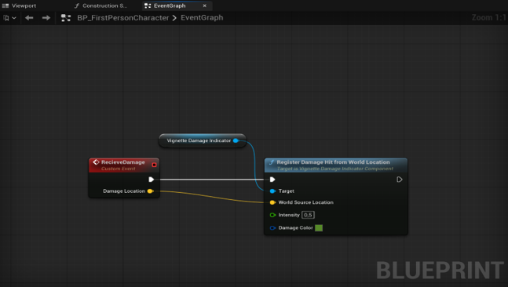
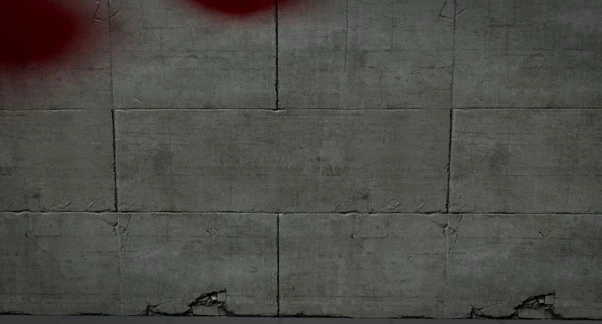
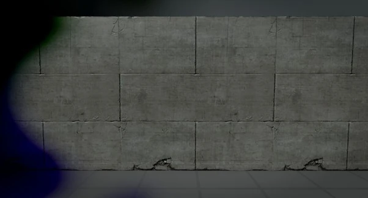

Effects
Vignette and damage indicators
Vignette
The vignette darkens the edges of the screen, the way most real lenses do. It pulls the eye toward the middle of the frame. HLSLens' vignette can also be colored, moved and stretched, every setting can also be animated. So it works for gameplay feedback too, like a pulsing red edge at low health.
The settings are in the Vignette category of the volume.
| Setting | What it does | Default | Range |
|---|---|---|---|
| Vignette Intensity | Overall strength. 0 is invisible, 1 fully applied. |
0.3 | 0 to 1 |
| Vignette Radius | How far in the darkening reaches. Higher keeps it at the edges, lower brings it further into the middle. | 0.75 | 0 to 1 |
| Vignette Smoothness | How soft the edge is. Higher gives a smooth fade, lower a harder edge. | 0.3 | 0 to 1 |
| Vignette Border Color | The color at the edges. Black darkens, any other color tints. | Black | — |
| Tile Scale | Stretches the shape. Use it to make the vignette rounder or more stretched. | 1, 1 | — |
| Vignette Center | Moves the center of the vignette. 0, 0 is the middle of the screen. |
0, 0 | −2 to 2 |
The vignette is on by default at a mild 0.3. Bloom is darkened by the vignette as well, so the glow fades toward the edges together with the image.
If you don't want a vignette but do use damage indicators, don't set Vignette Intensity all the way to 0.
Animating it is the easy way to make effects with it. Change the Vignette Intensity and Border Color from a Blueprint timeline or Sequencer. For example you can get a heartbeat pulse, fade to black, or a colored flash. This example video on YouTube shows a few things you can do.
Damage indicators
The damage indicator shows the player where a hit came from by lighting up the edge of the screen on that side. It uses the vignette, but it's driven from Blueprints, because the direction, strength and color change with every hit.
It currently works in singleplayer only.
Setup
-
Add a VignetteDamageIndicator component to your player character.
Only the player needs it. Enemies and other damage dealers don't.
-
Call one of the Register Damage Hit functions when the player takes damage.
Use them from wherever you handle damage, for example the Event Any Damage or Event Point Damage of your character.

The functions
| Function | When to use it |
|---|---|
| Register Damage Hit From World Location | The recommended default. Pass where the damage came from, for example a bullet's impact point or an explosion's position. |
| Register Damage Hit From Actor | Same as above, but it uses the actor's location. Handy when you have the attacker and not a hit location. |
| Register Damage Hit From Angle | Pins the indicator to a side of the screen, whatever happened in the world. Good for poison or fall damage. |
| Clear All Damage Indicators | Removes every indicator right away, for example on respawn. |
| Set Master Visibility | Fades the whole system, 0 to 1. Useful during cutscenes or when a menu is open. |
All three Register functions take an Intensity from 0 to 1 (higher values are clamped) that sets how big and visible the indicator is, and a Damage Color (red by default). Use the color to tell damage types apart, like green for poison and orange for fire.
From Angle works with a value from 0 to 1 around the screen: 0 is right, 0.25 top, 0.5 left and 0.75 bottom. It also takes a Spread, which is how wide the lit-up part is.
A hit from directly in front lights up the top of the screen and a hit from behind lights up the bottom. When damage comes from straight above or below the player, there's no clear side, so the whole edge of the screen lights up instead.


Several hits at once
Up to 4 indicators can be on screen at once. Hits that come from about the same direction are merged into one indicator, so a burst of machine-gun fire doesn't fill all four. If all four are busy, the weakest one is replaced.
Each indicator fades in, holds and fades out. You can change the timing on the component:
| Component setting | Default |
|---|---|
| Default Fade In Seconds | 0.08 |
| Default Hold Seconds | 0.35 |
| Default Fade Out Seconds | 0.6 |
| Default Spread | 0.15 (used by From World Location and From Actor) |
On the volume, two settings change how the indicators look:
| Setting | What it does | Default | Range |
|---|---|---|---|
| Vignette Damage Master Intensity | How visible damage indicators are. 0 hides them. |
1.0 | 0 to 1 |
| Vignette Damage Edge Bias | How tightly the color hugs the screen edge. Lower lets it spread further toward the center. | 1.5 | 0.1 to 8 |